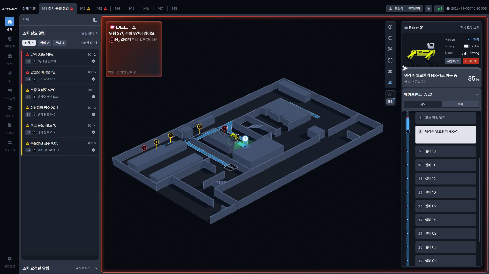
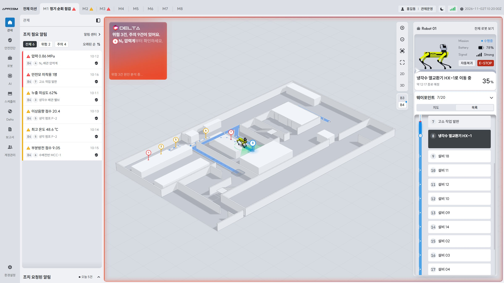
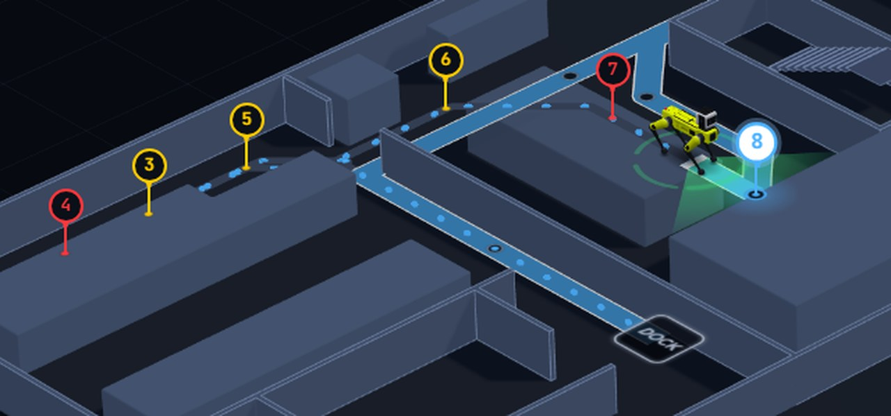
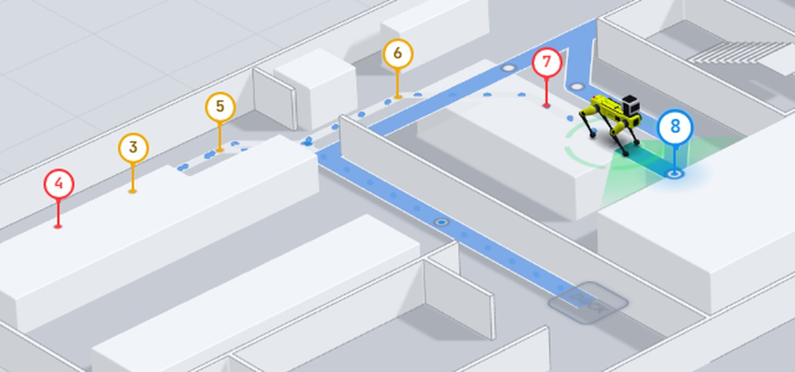

v7 M1 지도 디자인 정의서
미션 관제 화면(screens/main-v7.html) 가운데 3D 지도를 M1 정기 순회 점검 기준으로 정리한 개발 전달용 문서입니다. 수치·색·동작은 모두 지금 시안 코드에서 읽은 실제 값이며, 항목마다 근거 파일:줄을 달았습니다.
01한눈에
M1 은 Robot 01 이 지하 4층(B4)에서 웨이포인트 20개를 도는 정기 순회입니다. 화면을 열면 로봇은 WP-07 → WP-08 사이(55%)에 서 있고, 위험 2 · 주의 4 알림이 지도 번호 핀으로 표시됩니다.


?theme=light

지도가 보여 주는 것 — 위계
- 로봇(지금 여기) — 화면에서 가장 밝다. 3D 로봇개 + 바닥 4방향 호(arc). 늘 맨 위에 그린다.
- 문제 지점 — 위험 · 주의 번호 핀은 늘 보이고 솎기(겹침 정리)에서도 빠지지 않는다.
- 지금 가는 지점 — 다음 웨이포인트 핀(흰 속 + 길 색 테) + 바닥 글로우.
- 앞길(파랑 실선) → 지나온 길(점선) → 건물(무채색) 순으로 물러난다.
- 나머지 웨이포인트 번호는 숨기고 바닥 점만 남긴다 — 우측 레일에 손을 올릴 때만 뜬다.
02배치 · 층(레이어) 구조
3D 캔버스는 지도 칸보다 넓게, 우측 패널 뒤까지 깔립니다. 손(휠·드래그)은 지도 칸에서만 받습니다. 모델 중심은 캔버스가 아니라 지도 칸 중심에 맞춥니다.
| 요소 | 크기 · 위치 (1920×1080) | 역할 | 근거 |
|---|---|---|---|
| 상단 바 · 미션 탭 | 높이 56 · 탭 높이 44 | M1 탭 선택(.is-on). 선택 탭만 이름, 나머지는 번호만(최소 폭 56) | v7.css:11-42 |
| 좌측 알림 패널 | 폭 320 (≤1600px 은 308) | 조치 필요 알림 — 줄 호버 시 지도 핀 강조 | v7.css:879 |
.two-col | gap 20 · padding 20 · radius 8 · bg --bg-page | 지도 + 우측 패널을 담는 판, overflow:hidden | monitor.css:72 · app-shell.css:1202 |
.map-view (3D 캔버스) | ≈1516×1008 · inset:0 · z-index −1 | WebGL. 투명 배경 — 페이지 바탕이 비친다. pointer-events:none | app-shell.css:1254 · map-v6.js:16-21 |
.map-panel / .map-canvas | ≈1136×968 · x≈416, y≈84 | 손이 닿는 지도 칸. 도구 · 팝오버 · 핀 · 로봇 표식(DOM)이 여기 얹힌다 | main-v7.html:414-594 |
| 우측 패널 | 폭 320, 유리(blur) 면 | 로봇 카드 · 진행률 · 웨이포인트 목록/미니맵 | main-v7.html:606-1122 |
| Delta | 지도 칸 좌상단, 폭 295 | 지도 위 겹침 요소(이 문서 범위 밖) | main-v7.html:329-397 |
DOM 트리 (지도 칸)
.two-col
├─ section.delta3 Delta (지도 위 좌상단)
├─ span.map-view[data-map] 3D 캔버스 칸 (z −1, 눌리지 않음)
│ └─ canvas.map-scene[data-map-scene]
└─ section.map-panel > .map-canvas 손이 닿는 칸
├─ .floor-note[data-floor-note] 층 안내 (기본 숨김)
├─ .map-tools 우상단 도구 (z 5)
│ ├─ .map-tools-box [+] [−] [로봇 위치] [전체 보기] [2D] [3D]
│ └─ .map-tools-box.is-floors > .map-floors [B3] [B4]
├─ .map-wp[data-map-wp] 웨이포인트 팝오버 (숨김)
├─ section.map-alert.ma-v3 알림 팝오버 (숨김, z 6)
├─ .map-bot[data-map-bot] 로봇 DOM 표식 · 툴팁 (z 3)
├─ .map-card[data-map-card] 설비 카드 (숨김)
└─ JS 가 만드는 것 .rr-pins > .rr-pin (번호 핀, z 2) · .rr-labels · .rr-dock · .ma-wp-label
3D 그리기 순서 (renderOrder)
| 층 | 값 | 층 | 값 |
|---|---|---|---|
| 바닥 격자 | −1 | 지점 바닥 표식 · DOCK | 3 |
| 벽 뒤 경로(유령) | 1 | 선택 지점 후광 · 외곽선 유령 | 4 |
| 점선 밑 띠 / 흰 테 / 실선 리본 | 1.8 / 1.9 / 2 | 선택 외곽선 | 5 |
| 점선 경로 | 2.5 | 로봇 바닥 호(arc) | 900+ (깊이 무시) |
| 다음 지점 바닥 글로우 | 2.8 | 3D 로봇 | 맨 마지막 (깊이 지운 뒤) |
근거 map-v6.js:1553 · 2498 · 2519 · 2686 · 2760 · 3850 · 3884
03카메라 · 조작
투시 카메라지만 아주 약하게 씁니다. 카메라를 모델 반지름의 9배 거리에 세우고 화각을 좁혀 앞뒤 크기 차이가 10% 남짓만 나게 했습니다. 확대는 거리 대신 화각(FOV)만 바꿉니다 — 확대해도 원근 세기가 그대로입니다.
| 항목 | 값 | 설명 | 근거 |
|---|---|---|---|
| 원근 거리 EYE | 9 × 모델 반지름 | 모델 긴 변을 120 단위로 맞춰 원점 중심에 둔다(SPAN_UNITS) | map-v6.js:76-78 · 308 |
| 화각 | 2·atan((baseSize/zoom/2)/(span·EYE)) | 매 프레임 계산. near = max(0.1, eye−5·span), far = eye+5·span | 477-482 |
| 처음 각도 | yaw 45° · pitch ≈31.0° | 예전 아이소메트릭 (1, 0.85, 1) 방향과 같음 | 65-66 |
| 위 한계 (2D) | pitch 89° | 90° 는 화면 오른쪽이 정해지지 않아 뒤집힘. pitch ≥ 87° 면 "2D 상태"로 본다 | 67 · 854 |
| 아래 한계 | pitch 6° | 바닥 아래로 내려가지 않는다(좌우가 뒤집혀 읽힘) | 68 |
| 회전 | yaw 무제한 · 커서 1px = 0.006 rad | 11/06 v6 부터 드래그 360° 회전 열림 | 69 · 647 |
| 배율 | 0.3 ~ 8 | 휠 deltaY 1 = ×1.0015 (줄 단위 ×16, 페이지 ×100) · 버튼 ×1.5 · 커서 밑이 제자리 | 43-49 · 521-560 |
| 맞춤 여백 | FIT_AIR 1.08 | 배율 1 에서 지금 층 크기를 지도 칸에 담는 여백. 맞춤은 늘 처음 각도 기준 | 47 · 390-394 |
| 판 밀기 한계 | 모델 반지름 × 3 | 층 중심(home)에서 축마다 자른다 | 74 · 513-518 |
| 카메라 이동 | 320ms · easeInOutQuad | yaw · pitch · zoom · target 을 함께 보간. yaw 는 짧은 쪽으로. 탭이 숨으면 dur+40ms 에 끝 상태로 | 794-842 |
| 페이드 보간 | 프레임당 0.08 · 멈춤 0.002 | 투명도류 따라가기 | 311-312 |
손 조작
| 입력 | 동작 | 근거 |
|---|---|---|
| 휠 · 핀치 | 확대·축소 (커서 / 두 손가락 중점 기준). 쉬었다가(450ms) 확대하면 커서 자리가 Focus Point 가 된다 | 554-567 |
| 왼쪽 끌기 | 돌아보기(yaw · pitch) | 575-717 |
| Shift · 가운데 · 오른쪽 끌기 | 판 밀기. 지도 위 오른쪽 클릭 메뉴는 막는다 | 763-766 |
| 클릭 | 4px 이내 움직임만 클릭. 우선순위 웨이포인트(핀) → 설비 → 계단(층 이동). 클릭 자리가 Focus Point | 581 · 699-711 |
| Esc | 설비 선택 · Focus 해제 | 754-757 |
| 커서 | .map-canvas.is-turning · .is-panning · .is-picking(집을 수 있는 것 위) | 603-606 · 731 |
우상단 도구 v7
| 버튼 | 속성 | 동작 | 근거 |
|---|---|---|---|
| ＋ / − | data-map-zoom-in/out | 지도 칸 중심 기준 ×1.5 / ÷1.5. ＋ 는 Focus 가 없으면 칸 중심을 Focus 로 | 770-786 |
| 로봇 위치 | data-map-robot | 로봇에게 320ms 이동, 배율 max(지금, 2.2), 각도 유지. 다른 층이면 층부터 옮긴 뒤(+360ms) 이동 | 943-970 |
| 전체 보기 | data-map-track | Focus 해제 → 처음 각도 · 배율 1 · 층 중심. 2D 상태면 2D 를 유지하고 배율 0.74 | 849-862 |
| 2D / 3D | data-map-top · data-map-3d | 2D: 지금 각도를 기억하고 바로 위(89°)로. 3D: 기억한 각도로(없으면 처음 각도). 눌린 쪽은 다시 눌러도 그대로. 기본 3D. aria-pressed 400ms 마다 맞춤 | 879-912 |
| B3 / B4 | data-map-floor | 층 전환(10장). M1 기본 B4. 로봇이 있는 층에 6px 파란 점(.has-robot) | mission-scope.js:167-230 |
| 스타일 | 다크 | 라이트 | 근거 |
|---|---|---|---|
| 도구 상자 | 세로 · gap 8 · padding 4 · radius 8 · 유리 rgb(44 52 67/55%) + blur 10 + 위 테 inset 1px rgb(255 255 255/14%) + 그림자 0 14 30 −18 rgb(7 10 16/55%) | #F0F1F5 / 80% | monitor.css:1948-1969 · v6.css:982 |
| 아이콘 버튼 | 36×36 · radius 4 · 색 --text-secondary · 호버 bg --state-hover(다크 #373F4E) · 포커스 2px --border-focus offset 1 | app-shell.css:1146 | |
| 2D · 3D 글자 | 13px / 20 · 500 · 눌림 색 --status-info-icon | v7.css:137 · 1260 | |
| 층 버튼 | 높이 24 · radius 4 · 13/18 · 500 · mono · 묶음 padding 2 · bg --bg-map-chip · 선택 = secondary 버튼 스타일 | v7.css:1109-1119 | |
04지도 모델 · 재질
모델은 assets/model/apro-4f.glb 하나에 B4 · B3 두 층이 들어 있고, 층마다 00_floor / 01_wall / 02_equipment / 03_stairs 네 레이어로 나뉩니다. 덩이는 색으로 가르고, 외곽선은 어디서나 같은 색·같은 굵기입니다(기술 도면 톤). 면은 모두 불투명이며, 가린 것만 골라 비치게 합니다(5장).
| 레이어 | 면 — 다크 | 면 — 라이트 | 외곽선 진하기 (기본 → 보는 중) | 자체 밝힘(emissive) |
|---|---|---|---|---|
| floor 바닥 | #18202E | #BFC4CC | 0.25 → 0.25 (올리지 않음) | 0 |
| wall 벽 | #3A475F | #DFE2E6 | 0.7 → 0.9 | 0.55 |
| equipment 설비 | #41506A | #E1E4E8 | 0.7 → 1 | 0.4 |
| stairs 계단 | #34405A | #D8DBDF | 0.32 → 0.5 | 0.45 |
| other (모르는 이름) | #36435A | #DFE2E6 | 0.7 → 0.95 | 0.4 |
라이트 자체 밝힘은 일괄 0.18. 근거 map-v6.js:114-120 · 192-197
| 항목 | 다크 | 라이트 | 메모 · 근거 |
|---|---|---|---|
| 외곽선 EDGE | #7B8FB4 | #868C93 | EdgesGeometry 25° · 벽 이음 선은 지운다 165 · 1056 · 1144 |
| 비칠 때 향하는 색 GHOST | #6A7890 | #F2F4F5 | 166 |
| 바닥 격자 | #1F2A3C · 투명 0.3 | #C4C9D1 | 칸 10m · 건물 폭의 약 2.1배 · 바닥 판 바로 아래 1535-1555 |
| 지도 바탕(건물 밖) | #070A10 (--bg-page, 캔버스 투명) | #D6DAE1 | v6.css:1003 |
| 설비 선택 | 면 #AFB7C8 · 선 #E0E3E9 | 면 #CFE0FF · 선 #1D5FD6 | 외곽선 두 겹: 폭 6/α0.14 + 폭 2/α0.85. 지금 층 설비만 선택 가능 |
| 설비 호버 | 선 #9AA1AE | 선 #5B6577 | 폭 1.6 · α1 · 가려진 구간은 α0.28 유령선 |
| 재질 | MeshStandardMaterial · roughness 0.85(fx 켜짐 0.8) · metalness 0.05 · polygonOffset 1/1 · 그림자 주고받음 | 1041-1054 | |
조명 · 후처리 (map-fx-v6.js)
| 항목 | 다크 | 라이트 | 근거 |
|---|---|---|---|
| Ambient | 0.25 | 0.95 | map-v6.js:5139-5148 |
| Hemisphere | 하늘 #E4EDFB · 땅 #05070C · 1.25 | #FFFFFF · #E4E6EA · 1.6 | 6870 |
| 주광(Directional) | 1 · 위치 층중심 + (0.62, 0.8, −0.62)·2·span | 1.5 | 6872 |
| 그림자 | PCFSoft · 맵 2048 · radius 5 (fx 끔: 1024 · 3) · bias −0.0008 · normalBias 0.15 | fx:39 | |
| 톤 매핑 | none · exposure 0.9 (AgX 는 경로 색을 빼서 안 씀) | fx:34 | |
| 환경광 | RoomEnvironment · 0.1 | fx:35 | |
| 구운 AO (운영) | 반경 1.6m · 세기 1.4 | 세기 ×0.7 | fx:42 · 288-459 |
| Bloom | 0.4 · radius 0.15 · threshold 0.51 | 없음 | fx:37 |
| 비네트 | 0.3 · smoothstep(0.35, 1.05) | 없음 | fx:38 |
| 해상도 | MSAA 4 · HalfFloat · 픽셀 비율 min(max(dpr, 2), 2) | fx:40 · map-v6.js:7012 | |
| GTAO | 끔 (실험용) | fx:36 | |
?fx=off 면 후처리 없이 기본 렌더로 떨어진다(저사양 대비 경로).
05가림 처리 — 대상 앞만 비친다
로봇과 Focus Point(사용자가 누르거나 확대한 자리)는 늘 "대상"입니다. 카메라와 대상 사이에 낀 구조물만 반투명이 되고, 외곽선은 거의 그대로 둬서 "벽이 사라졌다"가 아니라 "벽 너머가 비친다"로 읽히게 합니다.
| 설정 | 값 | 뜻 |
|---|---|---|
| radius | 32px | 대상 둘레 판정 영역 |
| samples | 48 | 영역에 뿌리는 광선 수 |
| enter / leave | 20% / 12% | 이만큼 가리면 비치고, 이 밑으로 내려가야 돌아온다(문턱 깜빡임 방지) |
| fadeTo · fadeSoft | 면 불투명도 35% | 직접 가린 것 · 일부 가린 것 모두. 설비는 이 밑으로 내리지 않는다 |
| topPitch | 75° | 이보다 위에서 보면 영역 판정을 쉰다(탑뷰에선 벽이 가리지 않음) |
| robotTarget | 켜짐 | 로봇을 가린 구조물은 누르지 않아도 비친다 |
| routeGhost | 켜짐 | 벽 뒤로 들어간 경로를 옅게 비쳐 그린다(깊이 GreaterDepth) |
근거 map-v6.js:122-163. 경로 재판정은 최대 150ms 마다(4037-4041).
06경로
경로는 DOCK → WP-01 … WP-20 → DOCK 의 닫힌 길입니다. 세 토막으로 나눠 그립니다 — 지나온 길(점선) · 지금 구간(로봇 → 다음 지점, 가장 굵음) · 앞길(다음 지점 → 마지막, 실선). 마지막 지점 → DOCK 의 귀환 길은 앞길과 같은 모양입니다.
색 — 로봇 상태에서 온다
경로 색은 로봇 카드의 상태 배지 글자(수행중 · 완료 · 대기 · 끊김)로 정합니다. M1 의 Robot 01 은 "수행중"이라 앞길이 파랑입니다.
| 로봇 상태 | 지나온 길 (다크 / 라이트) | 앞길 · 지금 구간 (다크 / 라이트) | 로봇 · DOCK 표식 |
|---|---|---|---|
| 수행중 (M1) | #9EA8BB / #4B5563 | #4DB2FF / #138DEB | #F7F8FA / #2B2F36 |
| 완료 | #34C759 / #1DA67F | #1DA67F / #34C759 | = 지나온 길 |
| 대기 | #8894AA / #5D6675 | #5D6675 / #8894AA | = 지나온 길 |
| 끊김 | #667085 / #4E576A | #4E576A / #667085 | = 지나온 길 |
근거 map-v6.js:3353-3381. 이미 끝난 미션의 지나온 길은 수행중 회색을 쓰고 불투명도 ×0.4.
굵기 · 모양 — 미션 진행 상태별
굵기 = 기준 px × k 2.85. 표의 "불투명도"는 실제로는 바닥색(다크 #181D28 / 라이트 #D3D9E1)과 미리 섞은 불투명 색입니다(아래 14장 참고).
| 진행 상태 | 지나온 길 | 지금 구간 | 앞길 | 그 밖 |
|---|---|---|---|---|
| run 이동 · inspect 측정 · alert 알림 | 길 색 · 0.8 · 2×k · 둥근 점선 | 길 색 · 1 · 4×k · 실선 + 흰 테 | 길 색 · 다크 0.38 / 라이트 0.7 · 4×k · 실선 | 흐르는 빛(이동 중만) · 시야 부채 · 귀환 길 보임 |
| pause · estop · lost | 길 색 · 0.8 · 2×k · 점선 | #9EA8BB · 0.55 (lost 0.35) | #9EA8BB · 0.45 | 흐르는 빛 끔 · 부채는 pause 때만 |
| return 귀환 | 중립색(다크 #E4E8EF / 라이트 #2B3445) · 0.75 · 3.4×k ≈ 9.7px 실선 "도로" | 숨김 | 숨김 | 도로가 1800ms(ease-out-cubic) 동안 펼쳐지고, 위로 DOCK 방향 흐름 점선 |
| done 완료 | #9EA8BB · 0.6 · 2×k · 점선 | 숨김 | 숨김 | 처음 한 번 경로 전체를 3200ms 훑는 빛 |
근거 map-v6.js:3923-3979 · 3555(RR 설정). 10/30 v6 결정: 지나온 길 = 점선, 앞길 = 실선.
| 세부 | 값 | 근거 |
|---|---|---|
| 실선 그리기 | 바닥에 눕힌 리본(마이터 이음). 반폭 = lw/2 × 1.35(보정) × 화면 1px 크기. 카메라 쪽으로 span×0.0025 당김 | 3807-3900 |
| 흰 테 | 반폭 +1.2px · 지금 구간 흰색 90% · 나머지 55% (미리 섞음). done · return 때 없음 | 3907-3920 |
| 점선 | 점 2px · 간격 6px · 폭 2 — 우측 레일 타임라인 점과 같은 리듬. 바닥에 눕힌 타원(납작함 = max(0.3, |카메라 y|)) | 2422 · 2442-2469 |
| 점선 밑 띠 | 다크 #343E53 / 라이트 #E6E9EE | 3918 |
| 겹친 길 | "stack" — 되돌아오는 점선이 실선 한가운데에 얹힌다 | 3559 |
| 흐르는 빛(comet) | 지금 구간만 · 30fps · 꼬리 span×0.07 · 속도 span×0.11/s · 한 바퀴 뒤 0.4s 쉼 · 꼭짓점 14개, 길 색 → 흰색(f²) · 투명 0.15 → 1 · 머리는 길에 직각으로 자름 | 3687-3734 |
| 귀환 흐름 점선 | 대시 8×1.3 · 주기 14×1.3 · 31×1.3 px/s · 굵기 3.9 · 투명 0.7 · 다크 #0A0F18 / 라이트 #EEF0F3 — 우측 레일 .rr-homebar 와 같다 | 3991-4015 |
| 동작 줄이기 | prefers-reduced-motion 이면 흐르는 빛 · 부채 흔들기 · 맥박 모두 끈다 | 3556 |
07웨이포인트 — 바닥 점과 번호 핀
웨이포인트는 두 겹입니다. 바닥에 눕힌 점(3D)은 늘 있고, 그 위로 막대와 동그라미 머리의 번호 핀(HTML)이 섭니다. 핀 번호는 정해진 경우에만 보입니다.
번호 핀 표시 규칙 (11/04 · 11/05 디자이너 결정)
| 상황 | 번호 핀 |
|---|---|
| 평소(기본) | 문제 지점(위험 · 주의 · 건너뜀 · 해결됨) + 지금 지점만 보인다. 지나온 정상 · 앞으로 갈 지점은 숨기고(.is-quiet) 바닥 점만 남긴다 |
| 우측 레일 줄 호버 · 포커스 | 그 지점 번호만 잠깐 보인다(.is-hot) — 솎기보다 앞선다 |
| 좌측 알림 줄 호버 | .is-hot.is-point — 머리 1.4배 + 1.2s 퍼지는 링(흰 2px + 핀 색 14px), 다른 핀은 0.35 로 흐려짐(.has-point) |
| 알림 팝오버 열림 | 그 지점이 계속 "가리킴" 상태로 남는다 |
| 미션 설정 · 사전 점검 화면 | 점검 순서라 전부 보인다(body.sian) |
근거 map-v6.js:4464-4466 · 4538-4619 · v6.css:1283-1288 · 1828-1833
번호 핀 머리 — v7 색
| 경우 | 속 | 테 · 막대 | 번호 | 근거 |
|---|---|---|---|---|
| 위험 | 다크 #0A0F18 / 라이트 #FFFFFF | #FF383C | #FF383C | map-v6.js:4478 |
| 주의 | 다크 #0A0F18 / 라이트 #FFFFFF | #FFCC00 / #F2A900 | #FFCC00 / #8A6100 (흰 바탕 대비) | |
| 지금 지점 (다음) | #FFFFFF | 길 색 #4DB2FF / #138DEB | 길 색 | 4476 |
| 측정 중 | 길 색 | #FFFFFF | #FFFFFF | 4475 |
| 지나온 정상 (호버 때) | 바탕(다크 #0A0F18 / 라이트 #F2F4F5) | 길 색 | 길 색 | 4477 |
| 해결됨 (조치 완료) | 다크 #0A0F18 / 라이트 #FFFFFF | #9EA8BB | #9EA8BB / #5E6675 | 4473 |
| 기본 · 예정 (호버 때) | 바탕 | --pin-plain 다크 #4E576A(gray-600) / 라이트 #E0E3E9(gray-200) | --text-secondary | 4480 · v7.css:205 |
| 방금 정상 측정 | #34C759 (1400ms 뒤 숨김) | 바탕 | #0A0F18 | 4472 · 4386 |
| 핀 치수 | 값 | 근거 |
|---|---|---|
| 머리 | 20×20 · 테 2px · 원 · 번호 JetBrains Mono 700 9px · 자간 −0.4 | route-rules.css:318-345 · v6.css:1939 |
| 막대 | 폭 2.25 · 높이 20 (설비에 묻힌 자리 44) · 머리와 잇는 목 8×4 마스크 · v7 불투명 1 | v7.css:1309-1314 |
| 배율 따라 크기 | --pz = clamp(zoom^0.75, 0.8, 2.2) | map-v6.js:4435 |
| 지금 지점 | scale 1.2 · 링 rgba(137,185,237,.35) | route-rules.css |
| 솎기 | 26·pz px 안에서 겹치면 우선순위로 남김: 다음 0 › 위험·주의 1(솎지 않음) › 마지막 2 › ×10번 3 › ×5번 4 › 나머지 5 › 지나온 정상 7 | 4488-4508 |
| 가장자리 | 좌우 끝에서 핀 전체가 흐려지고, 위 끝에선 막대가 짧아진다(모자라면 .is-low) | 4515-4533 |
| 클릭 영역 v7 | 바닥 점 반경 14px + 핀 머리 사방 +4px + 막대 좌우 ±6px | 2374 · 2382-2402 |
바닥 점
| 상태 | 모양 · 크기(px) | 색 (다크 / 라이트) |
|---|---|---|
| 지나온 정상 | 원판 7 (미션 완료 시 5) | 길 색 (완료 시 #9EA8BB) |
| 위험 · 주의 v7 | 원판 7 — 삼각형 대신. 단계는 번호 핀이 말한다 | #FF383C · #FFCC00 / #F2A900 |
| 지금 | 꽉 찬 원 15 + 바닥 글로우 52 (투명 0.6 / 0.45) | #4DB2FF / #138DEB |
| 예정 | 고리 12 | #8894AA |
| 건너뜀 | 점선 고리 11 | #4E576A |
| 선택 | 흰 후광 28 | #FFFFFF |
위험 · 주의 지점엔 바닥 글로우를 두지 않는다(10/30 클라이언트). 귀환 중엔 바닥 점 없음. 크기 배율 = clamp(zoom^0.75, 0.8, 2.2). 근거 map-v6.js:2098-2110 · 2301-2342
웨이포인트 팝오버 · 설비 카드
- 공통 틀 — 최소 폭 200 · 최대 280(v6 값) · padding 14 · gap 10 · radius 8 · 머리 bg
--bg-raised· 몸--fac-bg(다크 #2C3443 92% / 라이트--bg-raised92%) + blur 12 · 꼬리 14×8 · 지점 14px 위. - 그림자 — 다크
inset 0 0 0 1px rgb(255 255 255/8%), 0 6px 16px rgb(0 0 0/35%)· 라이트inset … rgb(0 0 0/6%), 0 6px 16px rgb(0 0 0/14%). - 상태 칩 문구 — 정상 · 주의 · 위험 · 측정 중 · 예정 · 다음 지점. v7 은 조치 진행 두 단계(
.mwp-steps: 현장 응답 대기 → 현장 조치 중 → 조치 완료)를 더한다. - 설비 카드 — 사진 220×132 · 점검 결과 / 최근 점검 / 담당 로봇. 설비 위면 가운데에 붙고 칸 안 8px 로 자른다.
- 설비 이름 라벨 — 배율 1.35 이상에서 윗면 가운데에 뜬다.
근거 monitor.css:2610-2760 · v6.css:1702-1912 · v7.css:1340 · map-v6.js:2996-3149 · 4388-4412
08로봇
지도 위 로봇은 3D 로봇개(SPOT) 모델이고 늘 맨 위에 그립니다(설비에 가리지 않음). 바닥에는 상태를 말하는 호(arc)와 시야 부채가 깔립니다.
| 항목 | 값 | 근거 |
|---|---|---|
| 모델 | robot-spot.js (data-type="mobed" 카드는 바퀴 로봇) | map-v6.js:2613-2627 |
| 크기 | 배율 1 에서 높이 약 46px, 배율 따라 커진다 | 2622 · 2754 |
| 방향 | 경로상 span×0.01 앞 점을 본다 → aprism:robot-heading | 2753 · 4016-4035 |
| 동작 | 걷기: run · return / 서기: inspect · alert · pause · lost / 앉기: estop · done. lost 는 마지막 자세로 멈추고 0.4 로 흐려짐 | 2623 · 2788 |
| 바닥 호 v7 | 4방향 호. 앞 호 폭 14 · ±44° · blur 12 / 옆 호 3개 폭 12 · ±32° · 30%. 걷는 동안 앞 호만 2.4s 주기 35% ↔ 100% 깜빡임. 측정 중엔 앞 호가 부채와 함께 sin(t/650)·0.42 rad 흔들리고 1.8s 숨쉬기 0.45 ↔ 1 | 2640-2727 |
| 호 색 | 기본 #3BE07A · alert · estop #FF383C · pause #FFB020 · return #9EA8BB. lost · DOCK 안 · 바퀴 로봇은 숨김 | 2640-2727 |
| 시야 부채 | 길이 span×0.17 · 펼침 100° · 방사 그라데이션 1 / 0.55@60% / 0 · SPOT 은 초록 #3BE07A 0.55 (pause 0.45, #FFB020) · 바닥에서 span×0.002 위 | 1806-1860 · 3968-3971 |
| DOM 표식 | 누르는 자리 52×52(.map-bot-hit) · 배율 clamp(zoom^0.7, 1, 2.8) · 선택 시 후광 0.3 (160ms) | app-shell.css:1411-1474 · map-v6.js:2837 |
| DOCK | 바닥 둥근 사각 판 · "DOCK" 이탤릭 800 · 로봇이 들어 있으면 초록(다크 #3BE07A / 라이트 #1FA35A), 아니면 회색(#9EA8BB / #8A94A6) · 글자는 나가는 방향으로 | 4739-4787 |
09알림 지점
위험도 정책(UI_99)에 따라 위험 · 주의만 지도에 색으로 올라옵니다. 지도 위 표현은 번호 핀의 색 테가 주인공이고, 바닥 점은 같은 색 7px 원판으로 물러납니다.
| 요소 | 값 | 근거 |
|---|---|---|
| 빨간 바닥 링 (alert 상태) | 알림 지점 바닥 · 방사 채움 rgba(255,56,60,0→.22) · 테 #FF383C 6 · blur 16 · 1600ms 코사인 숨쉬기 0.55 ↔ 1 | map-v6.js:4677-4708 |
| 알림 팝오버 v7 | 고정 위치 — 왼쪽 = Delta 왼쪽 끝, 아래 = 우측 패널 아래 끝. 폭 295 · padding 3 · 사진 높이 187 · radius 8 · 제목 16/24 bold · 꼬리 없음(is-fixed is-no-tail) · 높이 330 미만이면 접힘(.is-folded) · z 6 | 2958-2989 · 3159-3191 · v7.css:346-559 |
| 팝오버 내용 | 판정 칩 · 감지 종류 · 제목 · 시각 · ⋮(크게 보기 / 패널에 고정) · 사진 + 위치·감지·로봇 · DELTA 조치 제안 · [진단 상세] [조치 요청(accent)] | main-v7.html:481-555 |
| 지점 라벨 | 열린 알림의 지점 바닥 링 아래 두 줄 — 1줄 장소 · 2줄 감지 시각 (층은 안 씀) | 4555-4572 |
| 카메라 | 알림 지점으로 갈 때 배율 max(지금, 2.4), 지점을 칸 중심보다 30px 위에 둔다 | 3255-3286 |
10층 전환
한 번에 한 층만 보입니다. M1 은 B4 한 층 미션이라 평소 전환이 없지만, 층 버튼을 누르거나 계단을 클릭하면 아래처럼 넘어갑니다. 넘어간 뒤엔 도착 층 전체를 한눈에 담습니다.
| 구간(0~1) | 층 버튼 900ms | 계단 클릭 1400ms |
|---|---|---|
| 계단으로 다가감 | — | 0 – 0.3 |
| 떠나는 층 100→20% · 오는 층 0→40% | 0 – 0.45 | 0.22 – 0.48 |
| 카메라 올라감(격자도 같이) | 0.15 – 0.75 | 0.34 – 0.74 |
| 오는 층 40→100% · 떠난 층 → 0 | 0.55 – 1 | 0.62 – 1 |
| 도착 전체 보기 | 320ms | 520ms |
구간마다 smoothstep. 전환 중 누른 층은 줄을 세운다. 위층 계단 구멍은 셰이더로 뚫는다. 근거 map-v6.js:5365-5431 · 5881-5896.
.stair-tag), 층 이동 알약 · 배지(.tr-pill · .tr-badge · .tr-chip)는 코드는 살아 있지만 route-rules.css:114 에서 display:none !important 로 숨겨 두었습니다. 구현하지 않아도 됩니다.11상태 · 이벤트
지도는 로봇의 진행 상태 하나(mode)와 경로 위 거리(s) 하나로 움직입니다. 실제 연동에선 이 두 값을 로봇 데이터로 넣으면 됩니다.
| mode | 로봇 | 바닥 호 · 부채 | 경로 |
|---|---|---|---|
| run 이동 | 걷기 | 초록 · 앞 호 깜빡 | 지금 구간 흐르는 빛 |
| inspect 측정 | 서기 | 초록 · 부채 흔들기 | 흐르는 빛 없음 |
| alert 알림 | 서기 | 빨강 + 빨간 바닥 링 | 그대로 |
| pause 일시정지 | 서기 | 주황 #FFB020 | 지금 · 앞길 회색 |
| estop 비상정지 | 앉기 | 빨강 · 부채 없음 | 지금 · 앞길 회색 |
| lost 연결 끊김 | 멈춘 자세 · 0.4 | 숨김 | 지금 구간 0.35 |
| return 귀환 | 걷기(DOCK 로) | 회색 | 중립색 도로 + 흐름 점선 |
| done 완료 | 앉기 · DOCK 안이면 숨김 | 숨김 | 회색 점선 · 한 번 훑는 빛 · 우측 목록 접힘 |
| 이벤트 | 방향 | 뜻 |
|---|---|---|
aprism:waypoint | 주고받음 | 지도 ↔ 우측 레일 지점 선택 |
aprism:map-alert | 지도 → 밖 | 알림 팝오버 열림 |
aprism:robot-heading | 지도 → 밖 | 로봇 방향 (우측 패널 2D 로봇이 따른다) |
aprism:rr-mode | 지도 → 밖 | done 들어가고 나갈 때 — 목록 접기 |
aprism:mission · aprism:scope | 밖 → 지도 | 미션 탭 바뀜 — 경로 다시 깔고 run 으로 |
aprism:wp-marks · aprism:requested | 밖 → 지도 | 지점 결과 · 조치 요청 상태 반영 |
근거 map-v6.js:3736-3741 · 3972-3976 · 2601 · 3044 · 3301-3329
12M1 데이터 (시안 값)
미션 "정기 순회 점검" · Robot 01 · B4 · 웨이포인트 20개 · 화면 시각 2026-11-02 10:20. 숫자는 임시 값입니다.
| WP | 이름 | 상태 · 결과 |
|---|---|---|
| 01 | FFU-01 토출구 | 완료 · 정상 |
| 02 | HEPA Filter 차압계 | 완료 · 정상 |
| 03 | 냉각수 배관 밸브 | 완료 · 주의 |
| 04 | N₂ 배관 압력계 | 완료 · 위험 |
| 05 | 냉각 펌프 P-2 | 완료 · 주의 ×2 |
| 06 | 수배전반 MCC-1 | 완료 · 주의 |
| 07 | 고소 작업 발판 | 완료 · 위험 |
| 08 | 냉각수 열교환기 HX-1 | 지금 · 이동 중 |
| 09–20 | 설비 NN | 예정 |
| 알림 | WP | 감지 · 값 | 시각 |
|---|---|---|---|
| 위험 | 04 | 계기인식 · 압력 0.86 MPa | 10:12 |
| 위험 | 07 | 안전감지 · 안전모 미착용 1명 | 10:16 |
| 주의 | 03 | 누출감지 · 누출 의심도 62% | 10:11 |
| 주의 | 05 | 이상음향 · 20.4 | 10:13 |
| 주의 | 05 | 온도감지 · 최고 48.6 ℃ | 10:14 |
| 주의 | 06 | 부분방전 · CH1 9.05 | 10:15 |
근거 screen.js:837-933 · alert-data-v7.js:17-189 · mini-routes.js:3
route-sim.js)는 시안 시연용입니다. 처음엔 멈춰 있고(WP-07→08 55% 지점), [재생]을 누르면 전체 경로를 70초에 돌며 지점마다 3.6초 측정하고, 끝나면 done 으로 멈춥니다(반복 없음). 실제 구현에선 로봇 위치·상태 데이터가 이 자리를 대신합니다. 화면 아래 시뮬레이터 바(.rsim)는 제품 UI 가 아닙니다.13색 토큰 — 지도에서 쓰는 것
| 위험도 | 아이콘 · 지도 (다크 / 라이트) | 글자 | 배경 | 테 |
|---|---|---|---|---|
| 위험 critical | #FF383C / #FF383C | #FFA69A / #B92B18 | #421A13 / #FBEBE9 | #B92B18 / #FF6B72 |
| 주의 warning | #FFCC00 / #E1AB13 (지도 핀 #F2A900) | #EEDA6B / #C28E0E | #383116 / #FDF8DF | #8C7400 / #EEDA6B |
| 안전 safe | #34C759 / #14C552 | #34C759 / #10AF48 | #19382D / #E6F6EE | #0E7258 / #34C759 |
| 정보 info | #6AA7E7 / #0D8DF9 | #C7DDF8 / #1B64DE | #2E539F / #A8CBF3 | #6AA7E7 / #6AA7E7 |
| 토큰 | 다크 | 라이트 | 토큰 | 다크 | 라이트 |
|---|---|---|---|---|---|
| bg-page | #070A10 | #E8EBEF | text-primary | #F7F8FA | #0B0E13 |
| bg-panel | #202838 | #F7F8FA | text-secondary | #AFB7C8 | #262A30 |
| bg-cell | #2C3443 | #E8EBEF | text-tertiary | #9EA8BB | #63686F |
| bg-raised | #373F4E | #FFFFFF | text-disabled | #4E576A | #A4A9B0 |
| bg-map-chip | rgb(10 14 21/50%) | #D5D7DB | border-default | #3F485C | rgb(11 14 19/14%) |
| bg-glass | rgb(44 52 67/55%) | rgb(255 255 255/92%) | border-focus | #3B79D5 | #6AA7E7 |
라이트 값은 v5.css:197-243 덮어쓰기까지 반영한 최종값. 다크 bg-glass 는 monitor.css:1948. radius — container 8 · card 4 · control 4 · pill 9999.
14구현 메모
- "투명도"는 미리 섞은 불투명 색입니다. 반투명 선을 겹쳐 그리면 이음새가 두 번 칠해져 진해집니다. 그래서 경로 색은
mix(색, 바닥색, 1−op)로 미리 섞어 불투명으로 칠합니다(바닥색 다크 #181D28 / 라이트 #D3D9E1). map-v6.js:3746-3760 - 경로 색은 로봇 상태 배지 글자에서 읽습니다. 로봇 데이터 기본값(#4990E0 등)은 상태 색이 덮어쓰므로, 수행 중 로봇의 앞길은 늘 #4DB2FF(다크) / #138DEB(라이트)입니다. 실제 구현에선 상태 코드로 바로 고르면 됩니다.
- 경로 모양은 시안에선 길찾기로 만듭니다. A*(0.5m 칸 · 로봇 반경 0.4 · 여유 0.2 · 꺾임 비용 45° 0.6 / 90° 1.4 / 135° 4 · U턴 금지) + 모서리 둥글리기. 웨이포인트는 경로 위에 고르게 놓은 임시 자리입니다. 실제 로봇 경로·지점 좌표가 있으면 그 값을 씁니다. 6199-6501
- 우측 미니맵 경로(웨이포인트 [지도] 탭)는 관제 경로에서 뽑은
mini-routes.js를 씁니다. 지도 경로를 바꾸면tools/export-mini-routes.mjs로 다시 뽑아야 둘이 맞습니다. - DOM 위치는 기기 픽셀에 맞춰 반올림합니다(
snapPx) — 핀·팝오버가 흐려지지 않게. 146-149 - v7 은 v6 코드 위에 덮어쓴 판입니다. body 에
ver-6 ver-7이 함께 붙고, 지도 JS 는map-v6.js하나가body.ver-7분기로 갈립니다. 이 문서의 v7 표시가 그 분기입니다. - 꺼 둔 실험 설정 — 겹침 솎기(prune), 경로 가림(occl), GTAO, 계단 칩은 기본 꺼짐입니다. 구현 범위에서 빼도 됩니다.
- 동작 줄이기 — OS 의 동작 줄이기 설정을 따라 흐르는 빛 · 흔들기 · 맥박을 끕니다. 제품에서도 지켜 주세요.